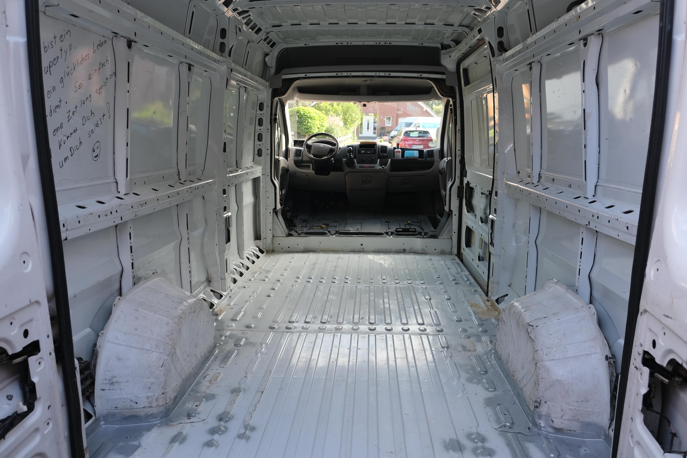

Van Conversion
Blogupdate numero uno!

Nun sind bereits sechs weitere Wochen vergangen und es hat sich so einiges getan. Das noch zuletzt leere Auto wurde mitlerweile mit ein wenig Leben gefüllt. Aber fangen wir mal vorne an.
Nachdem das Auto blitze blank war, konnten wir wieder einmal fragen, womit wir jetzt weitermachen. Diese Frage haben wir uns quasi täglich in den letzten Wochen gefragt. Damals entschieden wir uns für die Isolierung der Wände, des Bodens und der Decke, einfach alles was halt so zu sehen war. Isoliert haben wir mit Armaflex, einer Art Schaumstoff, welche wir als "selsbtklebend" gekauft haben und das Zeug klebt richtig.
 Mittlerweile haben wir die erste Woche rum und die Veränderungen sind sowohl sichtbar, aber gleichzeitig auch kaum erwähnenswert. Als Erstes mussten die Rückwand und der Boden raus .. allein das war schon leichter gesagt als getan. Die Verankerungen des Bodens waren so alt und verrostet, dass sich die Kontermuttern der Schrauben direkt mitgedreht haben. Das ist erst mal nicht so schlimm, aber dann durfte ich herausfinden, dass die Muttern unter angeschweißten Schutzblechen am Unterboden zu finden sind. Da hilft nichts anders als die gute alte Flex, welche nach nur wenigen Minuten alle Schrauben am Boden entfernt hatte. Auch an der Rückwand musste rohe Gewalt zur Lösung des Problems, einzelner Nieten, angewandt werden.
Boden und Rückwand ließen sich nun leicht entfernen und der Innenraum wurde deutlich heller und wirkte einfach größer. Was sich unter dem Boden verbarg, war schon vorher zu erraten, Dreck und Klebereste. Damals wurde wohl der Kleber sowohl durch Schrauben, aber auch durch Kleber befestigt .. und dieser Kleber war uns nun im Weg.
Mittlerweile haben wir die erste Woche rum und die Veränderungen sind sowohl sichtbar, aber gleichzeitig auch kaum erwähnenswert. Als Erstes mussten die Rückwand und der Boden raus .. allein das war schon leichter gesagt als getan. Die Verankerungen des Bodens waren so alt und verrostet, dass sich die Kontermuttern der Schrauben direkt mitgedreht haben. Das ist erst mal nicht so schlimm, aber dann durfte ich herausfinden, dass die Muttern unter angeschweißten Schutzblechen am Unterboden zu finden sind. Da hilft nichts anders als die gute alte Flex, welche nach nur wenigen Minuten alle Schrauben am Boden entfernt hatte. Auch an der Rückwand musste rohe Gewalt zur Lösung des Problems, einzelner Nieten, angewandt werden.
Boden und Rückwand ließen sich nun leicht entfernen und der Innenraum wurde deutlich heller und wirkte einfach größer. Was sich unter dem Boden verbarg, war schon vorher zu erraten, Dreck und Klebereste. Damals wurde wohl der Kleber sowohl durch Schrauben, aber auch durch Kleber befestigt .. und dieser Kleber war uns nun im Weg.
Der nächste Schritt beinhaltete das Reinigen des Fahrzeugs, womit wir am aktuellen Zeitpunkt noch immer nicht komplett fertig sind. Alles, also Boden, Seitenwände, Türen und Fahrerkabine mussten gesäubert werden. Somit vergingen zwei unglaublich spaßige Tage damit, unser Fahrzeug von innen zu reinigen. Am Ende kann man aber dennoch einen gewissen Unterschied zwischen allen drei Bildern sehen, was dann doch wieder ein wenig Freude aufbringt. Nach dem Säubern mussten wir dann noch die Roststellen bearbeiten und lackieren. Problematik an einem alten Fahrzeug ist natürlich, dass es davon mal mehr und mal weniger gibt, aber vor allem viele kleinere Stellen, an denen sich der Lack gelöst hat und der Rost bereits gearbeitet hat. Mit dem aktuellen Stand sind wir aber dennoch sehr zufrieden, wir hoffentlich im Laufe der nächsten Woche bereits die Fenster einbauen können und sowohl mit der Isolierung, als auch mit der Verkabelung anfangen können.